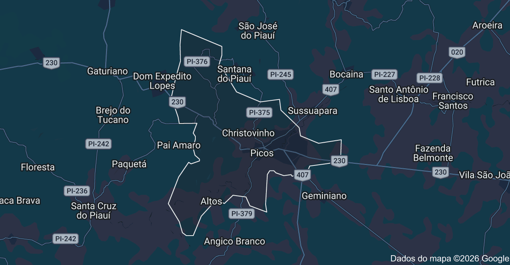

METAL TECH
RESÍDUO É RECURSO
Plataforma tecnológica para valorização de resíduos industriais.
E se o resíduo de uma empresa pudesse ser o recurso de outra?
A indústria gera diferentes tipos de resíduos. Alguns materiais ainda possuem potencial de reaproveitamento, mas existe uma barreira: a informação.
Simbiose Industrial
Diferentes organizações podem cooperar por meio do intercâmbio de materiais e subprodutos.
Nossa proposta: METAL TECH
Uma plataforma tecnológica para organizar informações sobre resíduos industriais e aproximar empresas que possuem materiais disponíveis daquelas que podem utilizá-los.
Organizar
Reunir informações sobre tipo, composição, características, quantidade e localização.
Identificar
Encontrar possíveis aplicações para os materiais disponíveis.
Conectar
Relacionar resíduos disponíveis com demandas industriais.
Como a proposta funciona?
O Metal Tech foi estruturado seguindo uma sequência de identificação, organização e conexão.
Um exemplo dentro do Metal Tech
Vamos simular uma possível conexão entre oferta e demanda.
Cavaco de Aço
COMPATIBILIDADE 82% de correspondência
Metalúrgica Alfa
Onde estão as oportunidades?
A localização também pode ser considerada na identificação de possíveis conexões.

O problema também foi investigado
Realizamos uma pesquisa de campo na Escola SESI Wilma Catão Araújo, em Picos (PI), com cinco participantes.
reconheceram a possibilidade de contaminação do solo
pelo descarte inadequado de materiais metálicos por empresas metalúrgicas.
Observação de descarte inadequado
O que os resultados indicam?
Existe percepção do problema
Os participantes reconheceram os possíveis impactos do descarte inadequado.
Existe potencial de reaproveitamento
Materiais descartados podem apresentar possibilidades de uso em outras atividades.
A tecnologia pode aproximar os agentes
A proposta busca reduzir a barreira informacional entre oferta e demanda.
“Para onde vai esse resíduo?”
“Quem pode precisar desse material?”
Uma proposta que relaciona inovação tecnológica, reaproveitamento de materiais e sustentabilidade industrial.